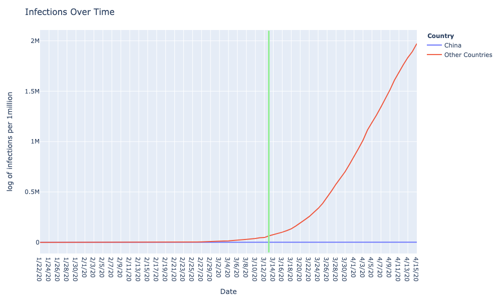
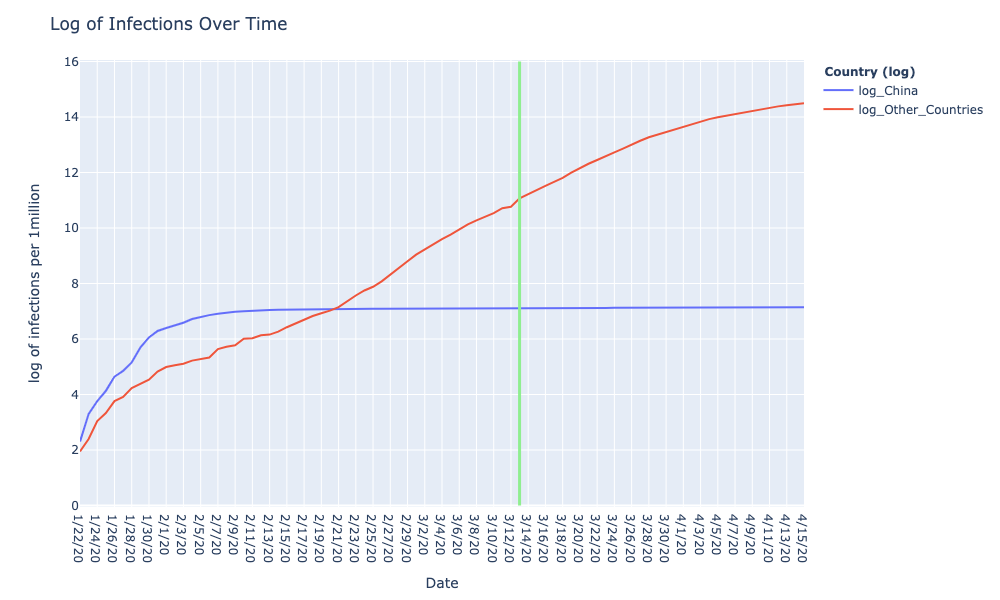

We found out that the COVID-19 Patient dataset was not going to be updated past March 13th. We had a hunch that the data would be outdated because when we first cleaned the data, many of the infections were still predominantly from China and Wuhan. To investigate this further we decided to look at how the number of infections in China changed overtime while the number of infections in the rest of the world changed from 01/01/20 to now. Using the JHU Covid19 dataset that is being updated every day this was the graph that was produced.

Since the number of cases in the world was significantly greater than China around late February we decided to plot the natural log of cases over time to be able to see the difference better.  The green line marks March 13th when our original dataset was not being updated. As can be seen, the total number of cases in the world exceeds China on the 21st of February, and since March 13th the number of cases in the world has increased dramatically. With the way the pandemic has been changing since March 13th as shown by this graph. It made complete sense to find a new dataset. Since we were unable to find any patient dataset that was being maintained, we decided that our best choice was to use the JHU COVID-19 global cases dataset that keeps track of the number of infections and deaths. We wanted to continue exploring the relationship between weather and COVID-19 cases however the location data for cases provided by the JHU global dataset is limited to just countries. As a result, we decided it was best to change our project goal and investigate factors closely tied to countries → Government InterventionOur new dataset is largely based on variables that measure government impact and effectiveness on the spread of the virus. Sources include World Bank Data, Worldometer (scraping), JHU Coronavirus Dataset and the Oxford COVID 19 Government Response Tracker. Our dataset has the following variables:
Our hypothesis was that more authoritarian governments with greater control over citizens would be better at containing the spread of the coronavirus.
Not every country has the same access to testing equipment, and some are using testing a lot more than others. Because of this, countries with a greater number of tests administered will likely also report a higher number of cases (and therefore larger total spread). We ran a Multiple Regression data on our model to confirm this result and found a high R-squared value (0.52) when testing data was included. This value dropped and MSE increased significantly when testing data was not included showing high correlation. In order to control for this and independently evaluate government impact on spread of virus, we used KMeans Clustering to find testing groups. We ran the algorithm on a log scale to achieve better results (took the log of testing values).
As we need to cluster countries based on only testing values, we ran our KMeans on this 1 dimensional data to get an elbow plot. The plot had a kink at n = 3 and hence we decided to create 3 groups to control for testing. According to the cluster centers obtained, we split our countries into Low, Medium and High Testing groups.
The reason we wanted to explore this relationship is because some argue that countries that were able to control the virus better have more obedient citizens or have a system where freedom is easily controlled. The Stringency index is based on lockdown measures that countries put in place to control the spread of the virus. Stringency Index Info The freedom index indicates the level of personal and economic freedom in a country. Freedom Index Info. It depends on variables directly controlled by the governments such as Rule of Law, Movement, Expression and Information etc.
NOTE: After conducting the test we realised it’s frowned upon to convert continuous data into categorical data. As a result, we don’t currently think it would make sense to use these results for the final poster but it may still be helpful as a starting point to explore further things to investigate for the final poster. The hypothesis we were trying to test here is better achieved with the t-test and the multiple regression we conducted later.
To investigate the relationship, we initially chose a Chi-Square Test of Independence because:
Infections per million to Infection Levels
Freedom Index to Freedom Levels
Stringency Index to Stringency Levels
With Freedom levels at 5% significance level
H_0: There is no association between Freedom Level and infections level
H_a: There is an association between Freedom Level and infections level
All: chi_squared=25.01461454146876, p_value=0.014753772510189158, degrees_of_freedom=12
CONCLUSION: Since p_value=0.014753772510189158 < 0.05, Therefore reject null hypothesis in favour of alternative hypothesis.
Low: chi_squared=8.778751803751803, p_value=0.45794308450657606, degrees_of_freedom=9
CONCLUSION: Since p_value=0.45794308450657606 > 0.05, Therefore do not reject null hypothesis for low freedom testing group.
Medium: chi_squared=19.297052154195008, p_value=0.08160746229678552, degrees_of_freedom=12
CONCLUSION: Since p_value=0.08160746229678552 > 0.05, Therefore do not reject null hypothesis for medium freedom testing group.
Note that if significance = 0.1, then the null hypothesis would not be accepted.
High: chi_squared=9.094736842105263, p_value=0.4285755424531232, degrees_of_freedom=9
CONCLUSION:Since p_value=0.4285755424531232 > 0.05, Therefore do not reject null hypothesis for high freedom testing group.
Analysis: There could be omitted variable bias when conducting the chi_square test without controlling for testing groups because the null hypothesis was rejected when looking at all testing groups while when split into testing groups the null hypothesis was accepted. Note the lower p-value for the medium testing group (p=0.0816..) whereas the p value for the low and high testing group was (p > 0.42). In the next steps, it would be interesting to investigate the relationship between freedom index and testing level using perhaps logistic regression since the testing variable is categorical.
With Stringency levels at 5% significance level
H_0: There is no association between Stringency Level and infections level
H_a: There is an association between Stringency Level and infections level
All: chi_squared=2.3619909502262444, p_value=0.6695067293595096, degrees_of_freedom=4
CONCLUSION: Since p_value=0.6695067293595096 > 0.05, Therefore do not reject null hypothesis.
Low: chi_squared=14.739999999999998, p_value=0.022378240107659195, degrees_of_freedom=6
CONCLUSION: Since p_value=0.022378240107659195 < 0.05 Therefore reject null hypothesis in favour of alternative hypothesis for low freedom testing group.
Medium: chi_squared=12.450757575757576, p_value=0.052636107372483816, degrees_of_freedom=6
CONCLUSION: Since p_value=0.052636107372483816 > 0.05,, Therefore do not reject null hypothesis for medium freedom testing group.
Note that if significance = 0.1, then the null hypothesis would not be accepted.
High: chi_squared=3.9999999999999996, p_value=0.40600584970983844, degrees_of_freedom=4
CONCLUSION:Since p_value=0.40600584970983844 > 0.05, Therefore do not reject null hypothesis for high freedom testing group.
Analysis: Even with the same testing groups, when conducting the chi square test, the probability of an association with the low testing groups exceeds 95% while for the medium testing group it does not exceed 95%, though it exceeds 94%.
Chi Square Tests Analysis and Next Steps
Given that the results of the Chi Square test involved frowned upon manipulation of continuous variables. The results will be taken with more than a grain of salt. It may be interesting to investigate how freedom index and stringency index plays out for the medium testing group because of the low p-values for the chi square test and the p value < 0.05 for the t-test with stringency level and infection level. After these chi square test results we knew that given our variables were continuous it would be better to investigate relationships using t-tests.
After considering the chi-squared test, we realized that a T-test would work better for our data. A T-test is used to compare the means of two different samples and test if the difference is statistically significant. We realized that we were essentially wanting to look at two samples -- countries with a high government measure and countries with a low government measure (stringency, freedom or government effectiveness) and see if there was any evidence to believe that government impact has had any effect on infections. We controlled for testing by dividing countries into 3 different groups through KMeans and conducting tests on each of these subgroups.
After controlling for testing, we had 3 groups of countries -- low, medium and high. Now in order to evaluate the effect of a government response measure we needed to have two samples -- infections from countries with high values for the measure, and infections for countries with low values for that measure. We created these two groups by taking the top 30% and bottom 30% of countries in each testing group for that government measure. Now we had two samples and having been drawn from the same pool they had the same variance.
We believed that countries with low government effectiveness and low stringency would have more infections. However, we believe that countries with low freedom index will have lesser cases (governments would easily restrict the movement of people). Hence, we used a one tailed independent T-test to evaluate the same with 5% significance.
Null Hypothesis: The mean of total infections from countries with lower stringency index is equal to the mean of total infections from countries with higher stringency index.
Alternate Hypothesis: The mean of total infections from countries with lower stringency index is higher than the mean of total infections from countries with higher stringency index.
Low:
degrees of freedom - 14
T-stat -- -0.1780587948507824
T-Crit -- 1.7613101357748562
Result- As the t value is less than the critical value we fail to reject the null hypothesis.
High:
degrees of freedom - 15
T-stat -- -0.1252158193466769
T-Crit -- 1.7530503556925547
Result- As the t value is less than the critical value we fail to reject the null hypothesis.
Medium:
degrees of freedom - 15
T-stat -- 1.4434551269382487
T-Crit -- 1.7530503556925547
Result- As the t value is less than the critical value we fail to reject the null hypothesis.
We fail to reject the null hypothesis in all three testing groups and hence cannot conclude that stringency index has an effect on infections. The t values are far from the critical t value for the low and high groups for stringency index. For the medium testing group we can see that with a lower statistical significance, we could have rejected the null hypothesis (1.44 is close to 1.75).
Null Hypothesis: The mean of total infections from countries with lower government effectiveness is equal to the mean of total infections from countries with higher government effectiveness.
Alternate Hypothesis: The mean of total infections from countries with lower government effectiveness is higher than the mean of total infections from countries with higher government effectiveness.
Low:
degrees of freedom - 22
T-stat -- -4.399572608623967
T-Crit -- 1.717144374380242
Result- As the t value is less than the critical value we fail to reject the null hypothesis.
High:
degrees of freedom - 22
T-stat -- -1.4188458102868113
T-Crit -- 1.717144374380242
Result- As the t value is less than the critical value we fail to reject the null hypothesis.
Medium:
degrees of freedom - 27
T-stat -- -0.8940797297564762
T-Crit -- 1.7032884457221265
Result- As the t value is less than the critical value we fail to reject the null hypothesis.
We fail to reject the null hypothesis in all three testing groups and hence cannot conclude that government effectiveness has an effect on infections. The t values are far from the critical t value for all three groups. After graphing and using multiple regression, we actually saw a positive relationship between government effectiveness and infections. This is because countries with more effective governments have better testing facilities. As a result, controlling for testing also controls for government effectiveness providing a null effect when evaluated independently.
Null Hypothesis: The mean of total infections from countries with lower freedom index is equal to the mean of total infections from countries with higher freedom index.
Alternate Hypothesis: The mean of total infections from countries with lower freedom index is lower than the mean of total infections from countries with higher freedom index.
Low:
degrees of freedom - 22
T-stat -- 1.4321547667186918
T-Crit -- 1.717144374380242
Result- As the t value is less than the critical value we fail to reject the null hypothesis.
High:
degrees of freedom - 22
T-stat -- 1.8217358674958581
T-Crit -- 1.717144374380242
Result- As the t value is greater than the critical value we reject the null hypothesis.
Medium:
degrees of freedom - 29
T-stat -- 1.5536169233381973
T-Crit -- 1.6991270265334972
Result- As the t value is less than the critical value we fail to reject the null hypothesis.
We fail to reject the null hypothesis for the low and medium testing groups but are able to reject the null hypothesis for the high testing group. T values were very close to critical values for all three groups and we would have been able to reject the null hypothesis for all at a lesser level of significance. This demonstrates that the freedom index is correlated with the number of infections. A graph is shown in the visualization section to demonstrate the above.
We fail to reject the null hypotheses for stringency index and government effectiveness in all three testing groups at the 5% level of significance. However, we were able to get t values which were close to critical values for freedom index and were also able to reject the null hypothesis in the case of the High testing group. This suggests correlation between the two variables. Not being able to reject the null for stringency index and government effectiveness does not however mean that there is in fact no effect any of them have on infections. Taking the top and bottom 30% may have skewed the data. Additionally, the presence of extreme values in the dataset may have resulted in the means being higher or lower than expected. A possible solution to this problem could be to take all values on a log scale. A two tail T-test may also serve the purpose of showing a possible effect as we only explored the one reasonable direction that each of the variables could push the infections towards. A two tail test would show if there may be any deviation in means of infection rates due to presence of any of these government indices. Next steps could possibly be trying a log scale or implementing a two tale T-test.
The above scatter plot represents the relationship between Freedom Index and the log of Total infections. This relationship was explored using both the t-test and the chi square test. For the t-test, we were able to reject the null hypothesis for the High Testing group and come close to the critical values in the other groups. In the chi square test we were able to reject the null hypothesis when looking at all the datapoints as a whole. One can see that the graph is almost Linear with more deviation in the Low testing group. This graph can serve as a standalone graph as no other information is required to understand it. The data is best visualized as a scatter plot however we can also show it as a Bubble Chart or Bar Chart. We picked this graph as it showed a significant trend we observed through both our testing methods. We did not have significant issues with this visualization and the only thing that was a little difficult was getting color to show up correctly for the kmeans labels (testing groups)
As our goal is to compare the efficacy of government control on the spread of coronavirus across different countries, we decided to use a map to illustrate 1. total infections per million 2. Stringency Index and 3. Government Effectiveness across various countries. Through a map, it is also illustrative of which regions, such as East Asia or Europe, of the world have systems of government that have greater influence over the spread of the virus. Through the visualization, it is evident there are varied levels of success of government stringency on the spread of the coronavrius. Alternatives to this comparison would have been through using a scatter plot which would illustrate the numeric differences better but not the regional differences. There were no significant challenges in visualizing the results. This result is supplementary to the Chi Square test analysis.
We attempted to predict a country’s total spread percentage based on the government effectiveness, law enforcement ability, corruption level, and human freedom variables. Our intuition behind this was that governments with higher effectiveness/organization and more control over its citizens would do a better job of limiting the total spread within its country.
Similar to the T-test, we ran it for the 3 levels of testing (High, Medium, Low -- found using the same Kmeans method as described above) as well as for all of the data points. We obtained the following results:
Variables: government_effectiveness, law_enforcement_ability, corruption_level, human_freedom
As you can see from the results, our model did not perform very well on any of these groups of data. Our highest R squared value (30.6%) came from running the regression on all countries, but the MSE (~130 million) was also extremely large. Out of all the testing-level groups, the High testing performed the worst with the lowest R squared (18.8%) and by far the highest MSE (~346 million).
Looking back at these results now and seeing how the pandemic situation has continued to evolve across the world, we realized that predicting a country’s total spread is nearly impossible to do with model like this, since the data for every single country’s coronavirus spread is continuously changing, and no one really knows when or how that might change. For example, while the U.S.’s spread rate might be really small when we run this data today, it could end up increasing a lot over the course of next week or the week after. Meanwhile, countries that were hit earlier with coronavirus outbreaks like Italy might have a simlar total spread today and next week, as the situation may have stabilized more. Another thing to keep in mind is that countries like Singapore and China, which were previously thought to have stabilized their coronavirus outbreaks, have recently reported potential “second waves” of infections; this just goes to show how unpredictable the rate of spread of the virus is, and how difficult it is to draw any conclusions from this available data.